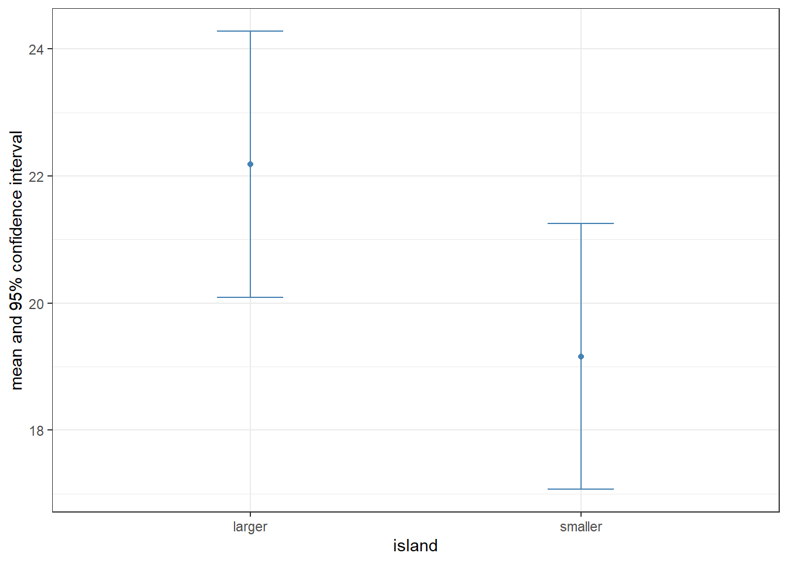
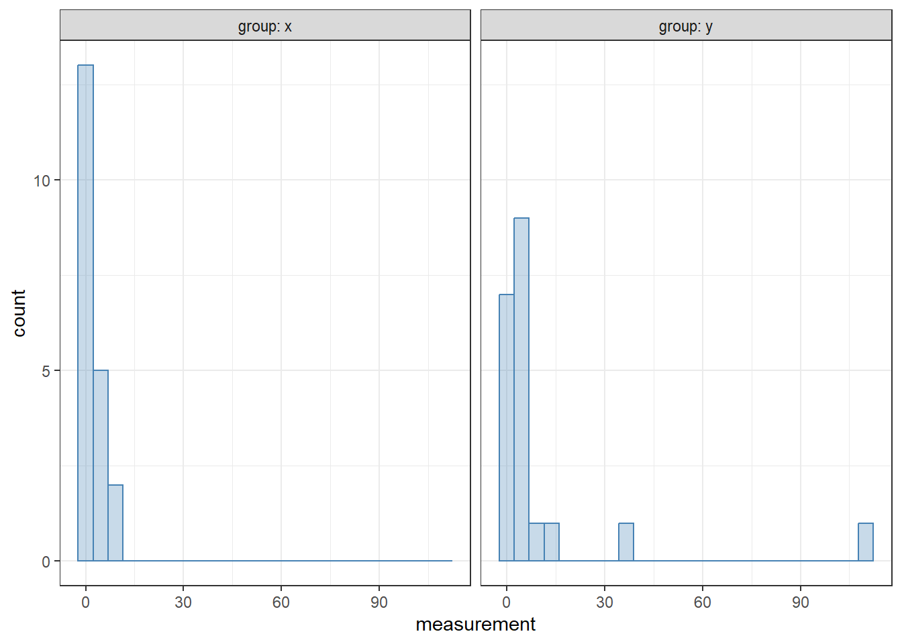

11.1 Introductory example and the Wilcoxon rank sum test
In this chapter we will take a first look at statistical tests of a very simple kind: comparing two groups of data. To illustrate why statistical inference is needed in such comparisons, let us take a look at a fictive dataset (fictive_bird_example.csv) which contains equally fictive weight measurements of different bird individuals from the same species. The birds are assumed to come from two islands, a larger and a smaller one. The question is: do the data provide evidence of insular dwarfism—the phenomenon that the body sizes of species tend to decline on small islands over evolutionary time?
We can load the data:
library(tidyverse)bird <-read_csv("fictive_bird_example.csv")print(bird, n =Inf)
A quick visualization below looks promising, with individuals on the smaller island indeed appearing to be smaller:
bird |>ggplot(aes(x = island, y = weight)) +geom_boxplot(colour ="steelblue", fill ="steelblue",alpha =0.2, outlier.shape =NA) +geom_jitter(alpha =0.4, width =0.05, colour ="steelblue") +theme_bw()
Note
In the above plot, geom_jitter was used to display the actual data points that are summarized by the boxplots. The function geom_jitter is just like geom_point, except it adds a random sideways displacement to the data points, to reduce visual overlap between them. The width = 0.05 option restricts this convulsion of the points to a relatively narrow band. Since all data points are now displayed, it makes no sense to rely on the feature of box plots which explicitly draws points that are classified as outliers—their plotting is turned off by the outlier.shape = NA argument to geom_boxplot. It is a useful exercise to play around with these settings, to see what the effects of changing them are.
Furthermore, the computed difference between the means and medians of the two samples are also clearly different:
bird |>group_by(island) |>summarise(mean =mean(weight), median =median(weight)) |>ungroup()
# A tibble: 2 × 3
island mean median
<chr> <dbl> <dbl>
1 larger 22.2 23.0
2 smaller 19.2 19.0
Can we conclude that the two samples are indeed different, and birds on the smaller island tend to be smaller, supporting the insular dwarfism hypothesis? As mentioned above, the data are fictive—they are not based on actual measurements. In fact, these “observations” were created by sampling each data point from the same distribution, regardless of island: a normal distribution with mean 20 and standard deviation 5. This means that any supposedly observed difference between the samples must be accidental. Would various statistical methods detect a difference? One thing we can do is what we have learned in Section 7.3: compute the 95% confidence intervals of the means, and see whether and how much they overlap.
bird |>group_by(island) |>summarise(mean =mean(weight), # Means of the two groupssd =sd(weight), # Standard deviationsN =n(), # Sample sizesSEM = sd /sqrt(N), # Standard errors of the meansCI =qt(1-0.025, N -1)) |># Confidence intervalsungroup() |># Ungroup the data (not necessary here, but a good habit)ggplot(aes(x = island, y = mean, ymin = mean - CI, ymax = mean + CI)) +geom_point(colour ="steelblue") +geom_errorbar(colour ="steelblue", width =0.2) +ylab("mean and 95% confidence interval") +theme_bw()

As seen, there is overlap between the 95% confidence intervals. While that by itself is not conclusive, it is an indication that the difference between the two samples may not be as relevant as it might have initially looked.
Let us wait no longer, and perform a statistical test. One widely used test to check if two samples differ from one another is the Wilcoxon rank sum test (also known as the Mann-Whitney test). Its implementation is as follows:
wilcox.test(weight ~ island, data = bird)
Wilcoxon rank sum exact test
data: weight by island
W = 271, p-value = 0.05589
alternative hypothesis: true location shift is not equal to 0
The function takes two arguments: a formula, and the data to be analyzed, in the form of a data frame or tibble. The formula in the first argument establishes a relationship between two (or more) columns of the data. We will discuss formulas and their syntax in more detail later. For now: the way to write them is to first type the variable we wish to predict, then a tilde (~), and then the explanatory variable (predictor) by which the data are subdivided into the two groups. In our case, we are trying to explain the difference in weight between the islands, so weight comes before the tilde and the predictor island comes after.
Let us now look at the output produced by wilcox.test above. Most of it is not particularly relevant for us: we are first informed that a Wilcoxon rank sum exact test is being performed; then we see that we are explaining weight differences by island; then we see the test statistic W itself (we need not concern ourselves with its precise meaning); then the p-value; and finally, a reminder of what the alternative hypothesis is (the null hypothesis is that the shift in location is in fact zero).
One piece of datum we are interested in is the p-value. This tells us the probability of observing a result at least as extreme as we see in our data, given that the null hypothesis is true. In our case, we are measuring how different the two samples are from one another, and the null hypothesis is that the only difference we might observe is due purely to chance. We find that the probability of this being the case, given our data, is 0.056. What this number means is that we have a roughly one-in-eighteen chance that the observed difference is nothing but a fluke. Since science leans towards erring on the side of caution (i.e., we would rather miss out on making a discovery than falsely claim having seen an effect), this value is in general a bit too high for comfort. And indeed: since in this case we know that the data were generated by sampling from the same distribution, any distinctiveness between them is incidental.
Warning
In many subfields of science, it is standard practice to consider p-values falling below 0.05 as “significant” and those falling above as “non-significant”. Besides the fact that such a one-size-fits-all approach ought to be suspect even under the best of circumstances, a significance threshold of 0.05 is awfully permissive to errors. In fact, we should expect about one out of twenty (\(1 / 0.05\)) of all papers ever published which have reported \(p = 0.05\) to be wrong! Digging deeper into this issue reveals that the figure is possibly much worse—see, e.g., Colquhoun (2014). One way to ameliorate the problem is to adopt a less exclusive and parochial view of p-values. Instead of having rigid significance thresholds, p-values can simply be reported as-is, and interpreted for what they are: the probability that the outcome is at least as extreme as observed, assuming that the null model holds. Treating this information as just another piece of the larger data puzzle is a first step towards avoiding the erroneous classification of random patterns as results.
Apart from the p-value which measures whether the observed effect is likely to have been due to chance alone, another important piece of information is some measure of the effect size: how different are the two samples? We have already computed the means and medians; their differences across the islands provide one way of measuring this effect size. It is possible to add a calculation of the effect size, as well as the confidence intervals, to the Wilcoxon rank sum test. All one needs to do is pass conf.int = TRUE as an argument:
wilcox.test(weight ~ island, data = bird, conf.int =TRUE)
Wilcoxon rank sum exact test
data: weight by island
W = 271, p-value = 0.05589
alternative hypothesis: true location shift is not equal to 0
95 percent confidence interval:
-0.018386 6.820811
sample estimates:
difference in location
3.436204
As additional output, we now receive the 95% confidence interval, as well as the explicit difference between the “locations” of the two samples. (A small word of caution: this “difference in location” is neither the difference of the means nor the difference of the medians, but the median of the difference between samples from the two groups of data—feel free to check the help pages by typing ?wilcox.test for more details.) The confidence interval, as seen, includes zero, which can be interpreted as being difficult to rule out the possibility that the observed difference in location is just due to chance.
The default confidence level of 95% can be changed via the conf.level argument. For example, to use a 99% confidence interval instead:
wilcox.test(weight ~ island, data = bird, conf.int =TRUE, conf.level =0.99)
Wilcoxon rank sum exact test
data: weight by island
W = 271, p-value = 0.05589
alternative hypothesis: true location shift is not equal to 0
99 percent confidence interval:
-1.16832 7.70439
sample estimates:
difference in location
3.436204
In summary, the Wilcoxon rank sum test failed to yield serious evidence in favor of rejecting the null hypothesis. Therefore, we cannot claim with any confidence that our fictive birds have different sizes across the two islands. While failure to reject the null is not the same as confirming that the null is true (absence of evidence is not evidence of absence!), the notion that the two samples are different could not be supported. In this particular case, since we ourselves have created the original data using the null hypothesis, we have the privilege of knowing that this is the truth. When working with real data, such knowledge is generally not available.
11.2 Some general conclusions
The example of Section 11.1 illustrates two important general points.
First, instead of jumping into statistical tests, we started the analysis with qualitative and descriptive data exploration: we plotted the data, computed its means and medians, etc. This is almost always the correct way to go.1 To perform tests blindly, without visually exploring the data first, is rarely a good idea.
Second, we only performed the statistical test after we have made an effort to understand the data, and after setting clear expectations about what we might find. We knew, going into the test, that finding a difference between the two island samples was questionable. And indeed, the test revealed that such a distinction cannot be made in good conscience. Following a similar strategy for all statistical inference can prevent a lot of frustration. To make the point more sharply: do not perform a statistical test without knowing what its result will be! A more nuanced way of saying the same thing is that if you think you see a relationship in your data, then you should also make sure that your observation is not just a mirage, by using a statistical test. But if a relationship is not visually evident, you should first ask the question whether it makes much sense to try to explore it statistically.
11.3 Parametric versus non-parametric tests
The Wilcoxon rank sum test we employed is non-parametric: it does not assume either the data or the residuals to come from any particular distribution. This is both the test’s advantage and disadvantage. It is an advantage because fewer assumptions must be satisfied for the test to be applicable. Non-parametric techniques also tend to fare better when only limited data are available. Since in many areas of biology (such as ecology) data are hard to come by, datasets are correspondingly small, making non-parametric techniques a natural candidate for interrogating the data with. On the downside, non-parametric tests tend to be less powerful than parametric ones: the additional assumptions of parametric tests may allow for sharper inference—provided that those assumptions are actually met by the real data, of course.
One of the most common parametric alternatives to the Wilcoxon rank sum test is Welch’s t-test. Like the Wilcoxon rank sum test, the t-test assumes the independence of the two samples. In addition, it also assumes that the samples are normally distributed. Let us see what the t-test says about our fictive bird data:
t.test(weight ~ island, data = bird)
Welch Two Sample t-test
data: weight by island
t = 1.8704, df = 36.92, p-value = 0.06937
alternative hypothesis: true difference in means between group larger and group smaller is not equal to 0
95 percent confidence interval:
-0.2520327 6.2997175
sample estimates:
mean in group larger mean in group smaller
22.18479 19.16095
The format of the output is similar to the one with the Wilcoxon rank sum test; the main differences are that the confidence intervals are included by default, and that the observed means of the two samples are also reported. Like with wilcox.test, the confidence level can be adjusted through the argument conf.level:
t.test(weight ~ island, data = bird, conf.level =0.99)
Welch Two Sample t-test
data: weight by island
t = 1.8704, df = 36.92, p-value = 0.06937
alternative hypothesis: true difference in means between group larger and group smaller is not equal to 0
99 percent confidence interval:
-1.366524 7.414209
sample estimates:
mean in group larger mean in group smaller
22.18479 19.16095
Importantly, the message conveyed by the p-value of 0.069 is in line with what we saw from the Wilcoxon rank sum test: there is no strong evidence to claim that the two samples are different. In this particular case, it does not make any qualitative difference whether one uses the parametric t-test or the non-parametric Wilcoxon rank sum test.
In other situations, the choice of test may matter more. The data in t_wilcox_example.csv have also been artificially created as an example. They contain two groups of “measurements”. In the first group (group x), the data have been sampled from a lognormal distribution with mean 0 and standard deviation 1. In the second group (group y), the data have been sampled from a lognormal distribution with mean 1 and standard deviation 1. Thus, we know a priori that the two distributions from which the samples were created have different means, and a statistical test may be able to reveal this difference. However, since the data are heavily non-normal, a t-test will struggle to do so. Let us load and visualize the data first:
example <-read_csv("t_wilcox_example.csv")example |>ggplot(aes(x = measurement)) +geom_histogram(bins =25, alpha =0.3,colour ="steelblue", fill ="steelblue") +facet_wrap(~ group, labeller = label_both) +theme_bw()

Applying a t-test first:
t.test(measurement ~ group, data = example)
Welch Two Sample t-test
data: measurement by group
t = -1.4796, df = 19.622, p-value = 0.1549
alternative hypothesis: true difference in means between group x and group y is not equal to 0
95 percent confidence interval:
-19.853561 3.388384
sample estimates:
mean in group x mean in group y
2.33571 10.56830
The parametric t-test cannot detect a difference between the samples. The fact is, since its assumption of normality is violated, such a test should not have been attempted in the first place. By contrast, the non-parametric Wilcoxon rank sum test correctly suggests that there might be a difference:
wilcox.test(measurement ~ group, data = example, conf.int =TRUE)
Wilcoxon rank sum exact test
data: measurement by group
W = 106, p-value = 0.01031
alternative hypothesis: true location shift is not equal to 0
95 percent confidence interval:
-3.039534 -0.378063
sample estimates:
difference in location
-1.798516
The p-value of 0.01 means that there is a one-in-a-hundred probability that the observed difference is due only to chance.
11.4 Statistical tests in a data analysis pipeline: The underscore notation
One natural question is whether statistical tests can be included in a data analysis pipeline. The answer is yes, but not without having to consider some complications that are due to historical accidents. Attempting the following results in an error:
bird |>wilcox.test(weight ~ island, conf.int =TRUE)
Error in wilcox.test.default(bird, weight ~ island, conf.int = TRUE): 'x' must be numeric
The reason for the error is in how the pipe operator |> works: it substitutes the expression on the left of the pipe into the first argument of the expression on the right. This works splendidly with functions of the tidyverse, since these are designed to always take the data as their first argument. However, a quick glance at the documentation of both wilcox.test and t.test (neither of which are tidyverse functions) reveals that they take the data as their second argument, with the formula coming first. A naive application of the pipe operator, like above, will therefore fail.
Fortunately, there is a way to work around this. One may use the underscore (_) in an expression to stand for whatever was being piped into it. The following will therefore work:
bird |>wilcox.test(weight ~ island, data = _, conf.int =TRUE)
Wilcoxon rank sum exact test
data: weight by island
W = 271, p-value = 0.05589
alternative hypothesis: true location shift is not equal to 0
95 percent confidence interval:
-0.018386 6.820811
sample estimates:
difference in location
3.436204
The underscore stands for the object being piped in—which, in our case, is simply the tibble bird. The data = _ argument therefore evaluates to data = bird.
This almost concludes all there is to using the underscore notation, except there are three subtleties involved. The first is a simple rule: the underscore must always be used in conjunction with a named argument. So in the above piece of code, writing wilcox.test(weight ~ island, _, conf.int = TRUE) will fail—the argument name must be written out, as data = _. Second, the underscore can only appear at most once in a function call. And third, using the underscore overrides the default behavior of silently substituting the data as the first argument to the function on the right of the pipe. That is, if one uses the underscore, then the data on the left of the pipe will be substituted only where the underscore is.
Note
In case you are using the magrittr pipe %>% instead of the built-in pipe |>, you can observe all of the rules above, except you should replace the underscore by a dot (.). So
bird |>wilcox.test(weight ~ island, data = _, conf.int =TRUE)
can be equivalently rewritten as
bird %>%wilcox.test(weight ~ island, data = ., conf.int =TRUE)
There are other subtle differences in how %>% works compared with |>; you can look at the help pages of both (?`%>%`, resp. ?`|>`) for a more thorough explanation.
11.5 Exercises
Atmospheric ozone levels are important for urban gardens, because ozone concentrations above 80 parts per hundred million can damage lettuce plants. The file ozone.csv contains measured ozone concentrations in gardens distributed around a city. The gardens were either east or west of the city center. Is there a difference in average ozone concentration between eastern vs. western gardens? Create a plot of the concentrations first and try to guess the answer, before performing any statistical analyses. Then do the statistics, using both nonparametric and parametric methods. What result do you find? Do the outcomes of the different methods agree with one another?
In the built-in iris dataset, the sepal and petal characteristics of the various species differ. Let us focus on just petal length here. Is there a detectable difference between the petal lengths of Iris versicolor and I. virginica? (Since we are not working with I. setosa in this exercise, make sure to remove them from the data first—e.g., by using filter.) Like before, start with a graph which you can base a hypothesis on. Then perform both nonparametric and parametric tests to see if your hypothesis can be supported.
Repeat the above exercise for any and all of the possible trait-species pair combinations in the iris dataset. E.g., one can compare the sepal widths of I. setosa and I. virginica, or the petal widths of I. versicolor and I. setosa, and so on.
Colquhoun, David. 2014. “An investigation of the false discovery rate and the misinterpretation of p-values.”Royal Society Open Science 1 (3): 140216. https://doi.org/10.1098/rsos.140216.
The exception is when one analyzes data from a pre-registered experimental design. In that case, one must follow whatever statistical techniques were agreed upon before data collection even started.↩︎